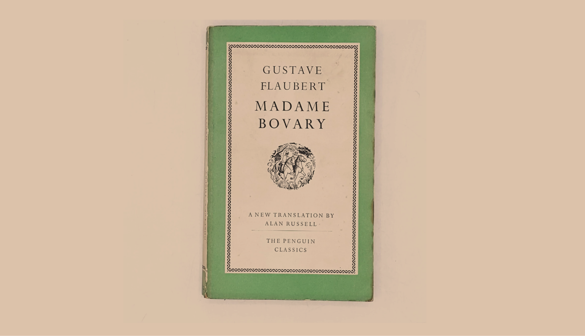
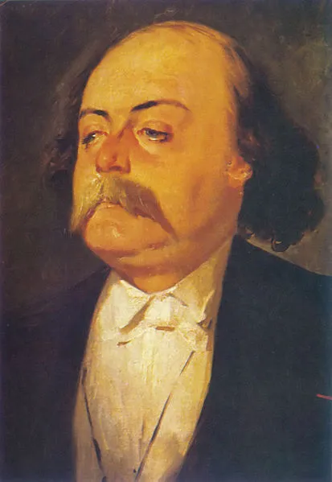

A brief sinopse and comments on ‘Madame Bovary’, by Gustave Flaubert
The book 'Madame Bovary', written by Gustave Flaubert and published in 1856, is considered along with some other works of the same period to be the starting point of literary realism in France and in the world. Flaubert's realism was responsible for criticizing society in different dimensions — especially with regard to literary romanticism — bringing important discussions previously ignored in the literature. On the one hand, this realism is understood by many to have a conservative view on society, especially with regard to the representation of women, often agents of adultery or in some way responsible for the instability of the family institution and the social order. On the other hand, others see this same female representation in a completely opposite way, with such being revolutionary and empowering. The truth is that by analyzing the work in the context of its time, it is possible to identify it as a work that contributed a lot to feminism, being responsible for a new form of representation of women in the art that massively influenced contemporary Western literature, bringing discussions that are not only about the condition of women in society, but also on the concept of family, marriage, church, and the bourgeois life of the time.
But before getting into more specific analyses, let's understand a little more about what the book is about.
The book begins by introducing Charles Bovary, a shy boy who lives in Northern France in a troubled family. Charles was sent to study medicine, giving little real focus to studies and more to a bohemian life. After graduating as a doctor, his mother thinks it’s necessary to marry off her son as soon as possible, so he ends up marrying an older rich woman named Heloise. Heloise, now Madame Bovary, was an extremely controlling woman and owner of some property.
Now married, while visiting the home of a patient who lives in the countryside, Charles meets Emma, a beautiful and kind woman who quickly makes him fall in love. Heloise finds out her husband was in love with this woman, but it turns out that in a great shock after seeing her properties being stolen, Heloise dies, leaving Charles free to marry Emma: and that's exactly what he does.
The two move in together and Charles becomes very dedicated to being an affectionate and loving husband, which Emma delighted at first. But the truth is that Emma has always been influenced by perfect loves idealized in romance novels, and she gradually begins to become dissatisfied with Charles as her husband. Every day she feels more irritated with Charles' simplicity, his lack of ambition and restlessness, and his ordinary habits, making her more and more frustrated. Still, the new Madame Bovary continues her relationship with Charles and later discovers she is pregnant.
Emma gives birth to a daughter named Bert, but even now as a mother her restlessness and distaste for that monotonous life only increases. It is at this moment that she meets a landowner named Rodolphe Boulander, who decides to seduce her, and, well, considering the restlessness in which Emma lived, he manages to do so easily. However, the relationship doesn't last long, as Rodolphe decides to go away because he doesn't want to build a commitment to anyone.
Emma's brief betrayal experience wasn't enough, so doesn't stop here and betrays her husband again with Leon, a romantic young man she has known since she married Mr. Bovary. However, Emma realizes that this relationship doesn't meet her needs either, disappointing herself once again.
At some point, the instability in Emma's life — which at this moment is not restricted to love, but also concerns financial problems, as she was seriously in debt — leads the woman to despair. She chooses to kill herself, leaving her husband a widow again.
Emma's husband falls into misery because of debts, and he only discovers the betrayals after the adulteress's death. Charles then becomes ill and eventually dies. Finally, Berta (the couple's daughter) goes to live with an aunt and has to work to support her.
Throughout the book, it can be difficult to determine who the real Madame Bovary is, to which the title refers — an effect produced intentionally by the author. Charles' mother, Heloise, and Emma can all be called 'Madame Bovary'. However, as the story develops, it is convenient to understand that Emma is the real protagonist of the book, being her the one to who the work’s title is more likely to refer.
In real life, it is possible that Gustave Flaubert had a lover who inspired the work. American researcher Francine Du Plessix Gray investigated Flaubert's life and speculated that the name of Flaubert's lover, who would have inspired Emma Bovary, was Louise Colet. Louise Colet used to get away from home to read Lamartine — which Emma Bovary also did — and spent her days immersed in romantic literature. Married to an unknown musician, she moved to Paris and ended up becoming a narcissist, who seduced everyone, becoming Flaubert's lover for some period.
“An infinity of passion can be contained in one minute, like a crowd in a small space.” —Gustave Flaubert, Madame Bovary
Madame Bovary was written in 1857 and was considered very polemic at the time because, in addition to Emma's adultery, the book was also very critical of the church and the bourgeoisie of the time. Flaubert went to trial several times but managed to convince the judges that he did not agree with the moral values present in the book, which was merely fictional, and that Emma's behavior was precisely a representation of what not to do. Of course, in such a Galileo Galilei kind of experience, his speeches at the trial weren't necessarily sincere, but they were helpful in getting him absolved.
Contrary to what many thought at the time, Flaubert was still Catholic. His criticisms were not against religious belief itself, but against the church as an institution and certain elements of conservative Christian morality. In 1857, Flaubert wrote to a friend: “I am more attracted to religion than anything else. I mean all religions, not one more than another. I find each specific repugnant dogma, but I consider that they were created by humanity’s most natural and poetic emotions.”
One of the great discussions that can be abstracted from the book is the distinction between marriage and a love relationship, being these two completely different. As the book makes clear, marriage — both for that specific time as well for other periods in history — is primarily a formal agreement that can have as its purpose the realization of divergent interests that depend on the time and society: an alliance between families, division of assets, social ascension, or simply the fulfillment of the woman (whose life would be considered incomplete without a husband in many patriarchal societies) are some examples. However, love as a feeling can be understood as something completely separate and independent of any formal contract: it can be found inside, outside, or even in the total absence of marriage. In addition, the power distribution in marriage was very unbalanced at the time: women were seen as the fragile side, the maternal being who watched over the education of the children and took care of their homes and, therefore, needed marriage to be able to fulfill themselves socially, but they didn't really have much decision-making power in the relationship of their own lives.
In more secular societies of the 21st century, it is common to see couples living and spending their lives together without necessarily having a formal contract that proves such a marital relationship; the couple in this case starts to live as if they were married, but the officialization of this relationship does not necessarily exist. But in the 19th century, this was still very unfeasible, so it is through adultery that Flaubert manages to express this distinction between marriage and love, demonstrating that one does not imply the other. In the book, much of the pleasure Emma managed to absorb came from her love relationships outside her marriage, but that in itself makes us wonder that, perhaps, it's not Emma's behavior necessarily the problem, but the way that marriages were set at the time.
Even though some analyzes of the work attributed it to a sexist view of women, with her being hypothetically blamed for all the tragedies in the book and represented as very prone to adultery, the truth is that considering the time it was written, this was really not the case. At the time the book was released, the woman was generally represented by ideals of purity, seen as a perfect and often unattainable being. Even in the novels written by Jane Austen, a writer of great influence on the feminist movement, the representation of women was still not that far from these ideas. In ‘Pride and Prejudice’, for example, Jane Bennett, the eldest of the Bennet sisters, is notably defined by her beauty and kindness, while any bad characteristics concerning her are not described.
Madame Bovary, however, reverses this logic. Once the adulterous woman is represented, the reader comes into contact with a new form of a female character, who lives real conflicts. The intention is not to show the woman just as the secondary character of a romantic couple where the course of her life is determined by men: the woman has her own desires, her own fears, autonomy, and responsibility for actions involving her life, and that of others. Whereas in many books it was men who determined the lives of men and women themselves, in Flaubert’s novel, the woman is just as important—if not more—than the man in the development and decision-making of each character.
It must be made clear that Gustave Flaubert cannot be considered as being a real properly feminist (the movement had not even yet developed so deeply at the time), but it is a fact that his works — like those of other writers such as Jane Austen and the Brönte Sisters — brought elements that contributed to the development of such movement in the literature subsequently produced.
Back to the top